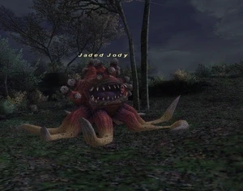

Level 75 reference · Zenith rules
|
Job: Notorious Monster |
 |

|
Zone |
Level |
Drops |
Steal |
Spawns |
Notes |
|
80 |
1 |
A, H | |||
|
HP = Detects Low HP; M = Detects Magic; Sc = Follows by Scent; T(S) = True-sight; T(H) = True-hearing JA = Detects job abilities; WS = Detects weaponskills; Z(D) = Asleep in Daytime; Z(N) = Asleep at Nighttime | |||||
Notes:
- Spawns at (E-11) in the upper-left part of the tile.
- Respawn timer is 2 hrs+ from last death.
- The placeholders are the two Great Ameretats on the lower part of the ledge.
- Jaded Jody favors Vampiric Root and uses it more often when close to death; however, it can also use Sweet Breath and Bad Breath, although very rarely (maybe 10% of the time, with each move accounting for 5%). The placeholders have the same TP moves, but it may not be as obvious since they don't use their TP as often.
- Jody also has an extremely high regen - Disable the regen by pulling Jaded Jody out of the spawn circle.
Adapted from Eden Wiki: Jaded Jody · Contributors and history · CC BY-SA 4.0. Revision 46919. Layout, links and optional background text adapted for Zenith.